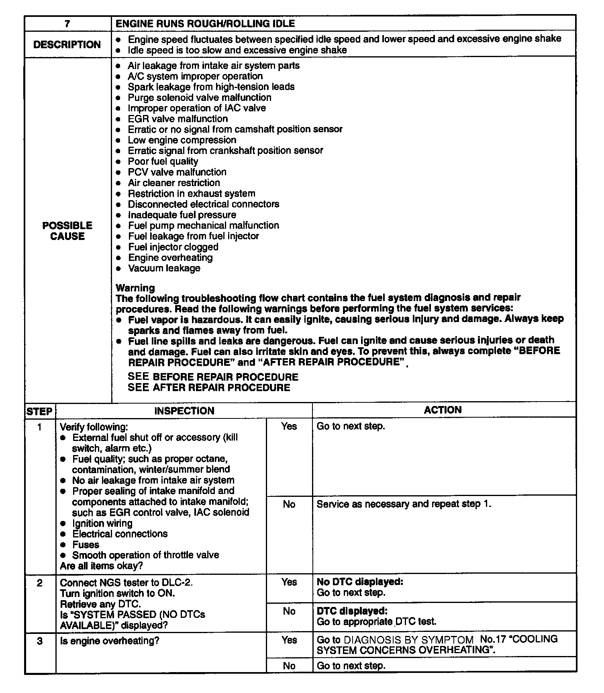
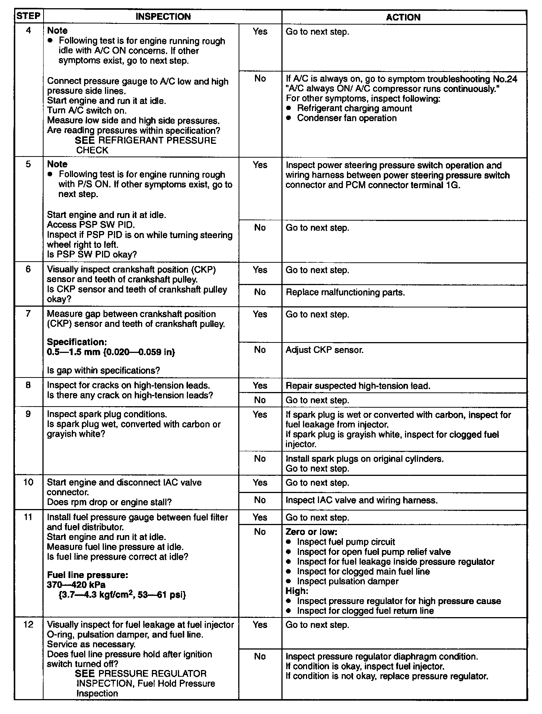
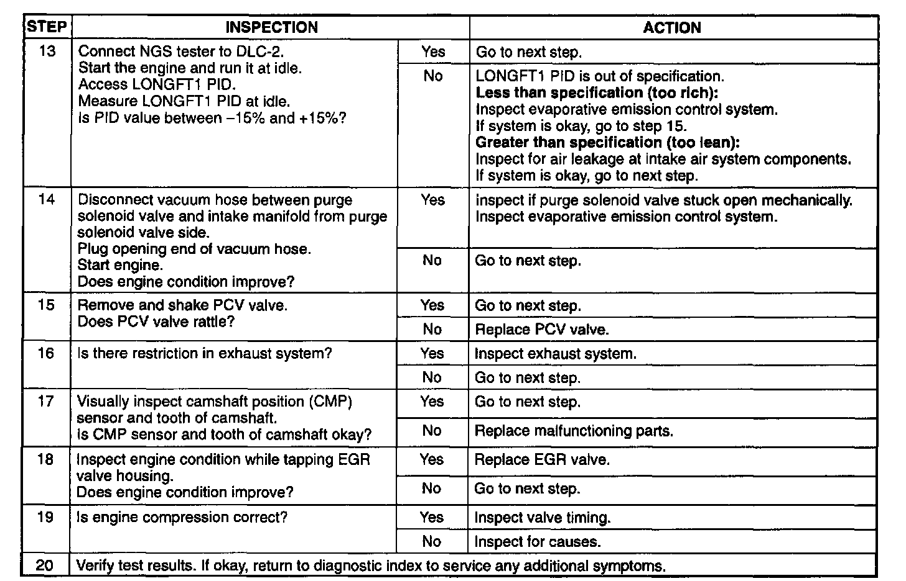

7 Engine Runs Rough/Rolling Idle
7. Engine Runs Rough/Rolling Idle (Step 1 To 3):

7. Engine Runs Rough/Rolling Idle (Step 4 To 12):

7. Engine Runs Rough/Rolling Idle (Step 13 To 20):

NOTE:
^ If the Malfunction remains even though all inspection has been performed, get assistance from technical hotline/your distributer.